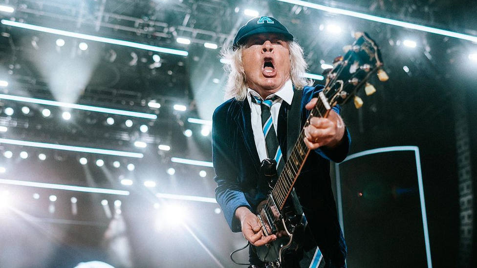
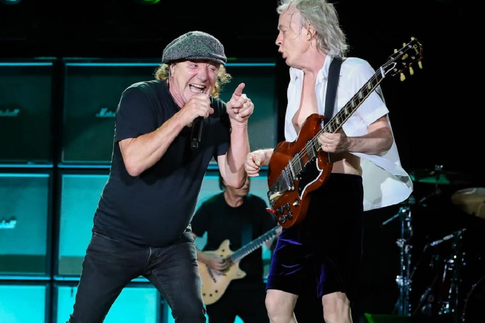

AC/DC podría llegar a Brasil en este 2024: ¿Hay chances de que pisen Argentina?
La banda australiana desembarcaría en el país carioca para llevar a cabo cuatro shows. Todo lo que se sabe en esta nota.
Ver nota completa

AC/DC marcó récord histórico de reproducciones en YouTube
Es la segunda canción de la banda que consigue este logro y se suma al “Club del Billón”.
Ver nota completa

AC/DC volvió a los escenarios después de 7 años
El espectáculo marcó la primera vez que el vocalista Johnson actuó con el grupo desde septiembre de 2016 en Filadelfia.
Ver nota completa